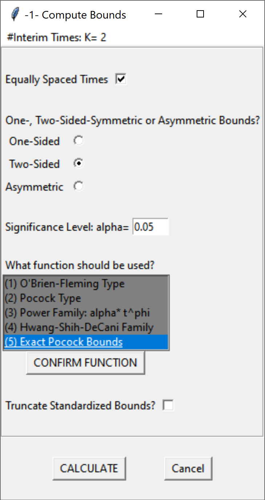
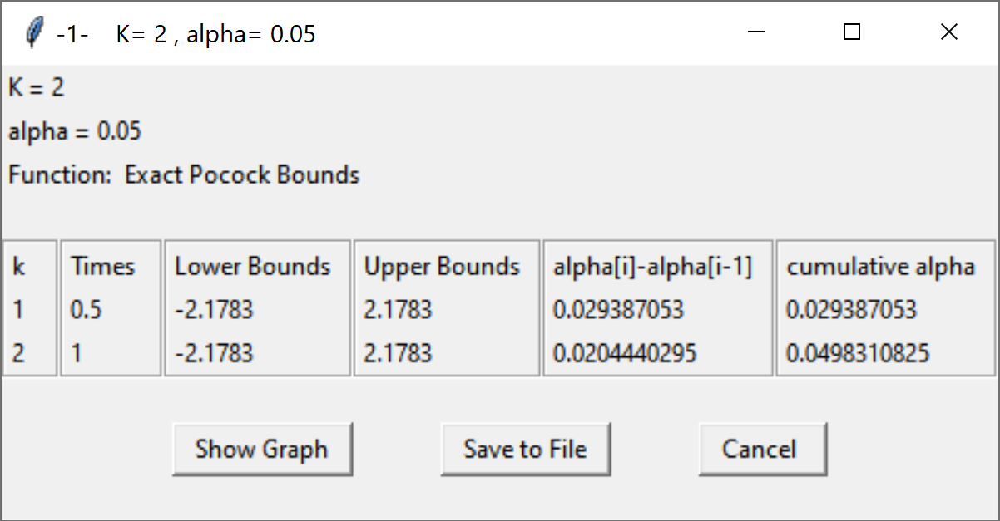

14.1 Choosing alpha levels for sequential analyses.
In sequential designs researchers will collect data with the plan to analyze the data at various times during the data collections. For example, a researcher plans to collect data from 200 participants and plans to analyse the data after 100 participants are collected, and once again after 200 participants are collected. Each analyses is called a look, so there are in total 2 looks at the data planned, with one interim analysis, and one final analysis. Not all looks have to occur in practice. If the analysis reveals a statistically significant result at look 1, data collection can be terminated. It is also possible to stop the data collection at look 1 because a predicted effect is absent, and continuing the data collection is not deemed worthwhile, which is called stopping for futility.
If one would analyze the data at multiple looks without correcting the alpha level, the Type 1 error rate would inflate (Armitage et al., 1969Armitage, P., McPherson, C. K., & Rowe, B. C. (1969). Repeated significance tests on accumulating data. Journal of the Royal Statistical Society: Series A (General), 132(2), 235–244.). As Armitage and colleagues show, with equally spaced looks, the alpha level inflates to 0.142 after 5 looks, 0.374 after 100 looks, and 0.530 after 1000 looks. Looking at the data twice is conceptually similar to deciding if a result is significant if one of two dependent variables shows a statistically significant effect. However, an important difference is that in the case of sequential analyses the multiple tests are not independent, but dependent. A test at look to combines the old data collected at look 1 with the new data at look 2. This means the Type 1 error rate inflates less quickly compared to independent tests, and we will see below this enables more efficient and flexible solutions to controlling error rates.
The solution to control Type 1 error inflation is again conceptually similar to a multiple comparison problem. By lowering the alpha level at each look, the Type 1 error rate can be controlled. They way the alpha level is reduced differs, however. To control the Type 1 error rate, we would lower the alpha level for each test, for example using the Bonferroni procedure where each test would be performed at \(\alpha/2\). In sequential analyses we similarly adjust the alpha level. It is even possible to just use a Bonferroni correction (Wassmer & Brannath, 2016Wassmer, G., & Brannath, W. (2016). Group Sequential and Confirmatory Adaptive Designs in Clinical Trials. Springer International Publishing. https://doi.org/10.1007/978-3-319-32562-0). But because the data is dependent (at look 2 we combine the data we collected at look 1 with the new data, so the data covary) the way to correct alpha levels can be done more efficiently. If you combine multiple looks at the data with multiple comparisons, you would first correct the alpha level for multiple looks, and then correct the alpha level at each look for the multiple comparison correction. Because the alpha level is corrected, it does not matter which statistical test you perform at each look, all that matters is that the p-value is compared to the corrected alpha level.
14.1.1 Pocock correction
We will start with the Pocock correction, which is the simplest way to correct the alpha level for multiple looks. Conceptually, it is very similar to the Bonferroni correction. We can see at the Wikipedia page for the Pocock correction that with 2 interim analyses the alpha level for each look is 0.0294, for three looks it is 0.0221, for 4 looks it is 0.0182, and for 5 looks it is 0.0158. We see the correction is slightly more efficient than using a Bonferroni correction (in which case the alpha levels would be 0.025, 0.0167, 0.0125, and 0.01). Applying the Pocock procedure requires 1) specifying the number of looks in advance, and 2) equally spaced looks, where each batch of observations has the same size (e.g., looking after 25, 50, 75 and 100 observations).
Note that we can accurately calculate the alpha levels that should be used to 4 digits after the decimal points, but the alpha level you will observe for all tests in your lifetime probably has too much variability to worry too much about anything after 3 digits after the decimal point (and maybe even 2). We will compute alpha levels in this tutorial with higher precision than you need to care about in real life.
We will use multiple packages in R to compute corrected alpha levels for each look, such as gsDesign, rpact, and ldbounds. RPact is also available as a Shiny app.
# Use Rpact to specify a design with 2 looks and Pocock correction
library(rpact)
design <- getDesignGroupSequential(
kMax = 2,
typeOfDesign = "P",
sided = 2,
alpha = 0.05,
beta = 0.1
)
summary(design)## Sequential analysis with a maximum of 2 looks (group sequential design)
##
## Stage 1 2
## Information rate 50% 100%
## Efficacy boundary (z-value scale) 2.178 2.178
## Cumulative alpha spent 0.0294 0.0500
## Two-sided local significance level 0.0294 0.0294► Question
What happens to the alpha level if you have 3 looks in total?
Solution
rpact makes it easy to plot the boundaries (based on the critical values) for each look. We see the critical values are higher than the 1.96 we would use for a fixed design with a 5% alpha level, namely: 2.2894781, 2.2894781, 2.2894781.
Figure 14.1: Plot of critical boundaries at each look for a 2 look design with a Pocock correction.

We can also use the gsDesign package (not that the gsDesign package reports one-sided alpha levels, and thus returns a one-sided alpha level of 0.0147, instead of the two-sided alpha level 0.294. You will need to double the alpha level for a two-sided test (or just use rpact, which reports two-sided alpha levels when asked).
seq_design <- gsDesign(
k = 2, # k = number of looks = 2
test.type = 2,
alpha = .025, # gsDesign computes one-sided alpha levels, so we halve alpha
sfu = "Pocock"
)
gsBoundSummary(seq_design)## Analysis Value Efficacy Futility
## IA 1: 50% Z 2.1783 -2.1783
## N/Fixed design N: 0.55 p (1-sided) 0.0147 0.0147
## ~delta at bound 0.9061 -0.9061
## P(Cross) if delta=0 0.0147 0.0147
## P(Cross) if delta=1 0.5893 0.0000
## Final Z 2.1783 -2.1783
## N/Fixed design N: 1.1 p (1-sided) 0.0147 0.0147
## ~delta at bound 0.6407 -0.6407
## P(Cross) if delta=0 0.0250 0.0250
## P(Cross) if delta=1 0.9000 0.0000It is also possible to recreate these analyses in the GroupSeq package, which has a GUI based interface. Run ‘groupseq(mode = “g”)’ in R, and the three screenshots below create the same output.
Figure 14.2: Screenshot of the GroupSeq GUI to choose a task.

Figure 14.3: Screenshot of the GroupSeq GUI to compute bounds.
Figure 14.4: Screenshot of the output of the GroupSeq GUI.
The analysis can also be performed in the rpact shiny app which also allows users to create all plots through simple menu options, and download a complete report of the analyses (e.g., for a preregistration document). The rpact shiny app is the easiest resource to use from all options discussed here.
Figure 14.5: Screenshot of rpact Shiny app.

Page built: 2020-08-15